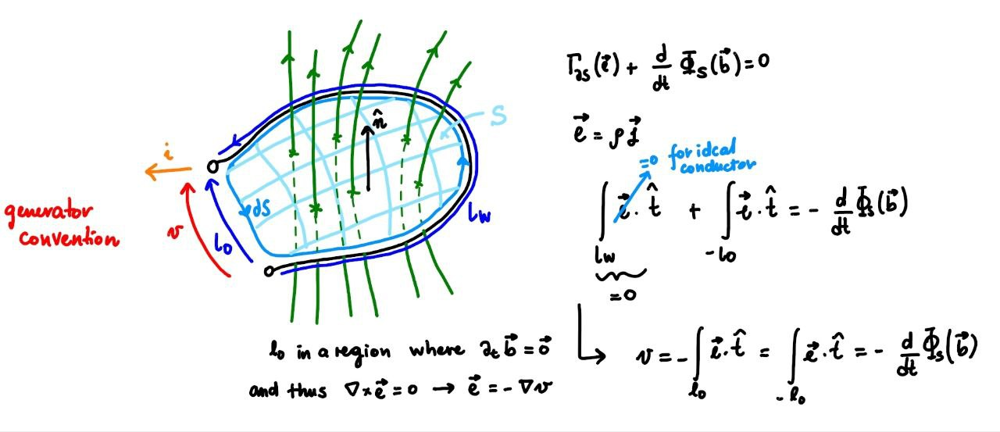
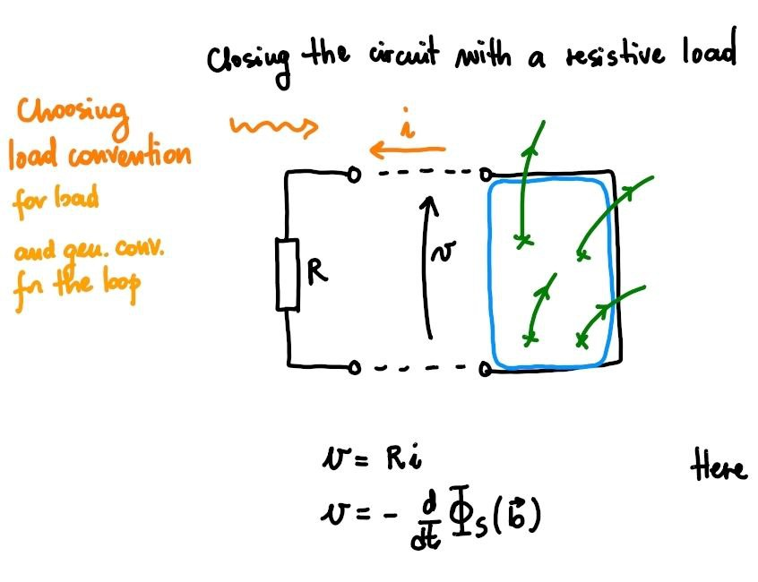
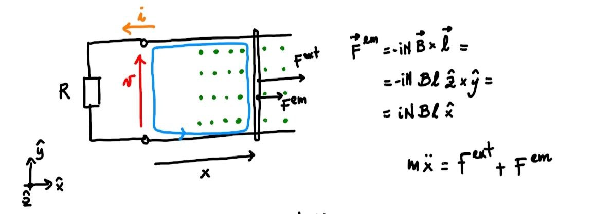

6.3. Electromechanical Circuits#
Some systems of interest and widespread use in modern society exploit the interactions between electromagnetic and mechanical phenomena: a fundamental example is electric machines, some of which can operate both as motors (with power supplied by the electrical system and converted into mechanical power) and as generators of electrical energy (converting mechanical power into electrical power).
In a system of inductors with mutual influence, the voltage difference across the “enhanced” inductor \(i\) is
The linked flux depends on the effect of all the inductors in the system (and the magnetic field generated by any causes external to the system),
where \(\theta_{ik}\) is the reluctance of the circuit between the enhancing inductor \(k\) and the enhanced inductor \(i\). Using the expression for the magnetomotive force \(m_k = N_k \, i_k\), the voltage difference expression can be rewritten as
In general, in electromechanical circuits, reluctances are not constant parameters of the system but depend on the “mechanical” state of the system, described here by the variables \(\mathbf{x}\),
The inductance matrix \(\mathbf{L}\) is symmetric todo Proof
Example 6.1
Given an constant and uniform magnetic field \(\mathbf{b}(r) = \mathbf{B}\) in a region of space where a simple electric circuit is placed. The electric circuit consists in a simple circuit with a resistance \(R\) as a lumped load, and has a rectangular shape. Three sides are fixed, and the distance between the pair of parallel fixed sides is \(\ell\); the fourth side can move and its distance between the parallel fixed side is \(x\). The unit vector orthogonal to the rectangular surface enclosed in the circuit is \(\hat{\mathbf{n}}\).
A mechanical system provides the prescribed motion \(x(t) = x_0 + \Delta x \sin(\Omega t)\) to the moving side. It’s asked to evaluate and discuss:
voltage at the electric port of the load
energy balance
 |
Without considering the inductance of the simple circuit. Faraday’s law
provides the relation between the time derivative of the magnetic flux though two points of the electric circuit on opposite sides of the moving side of the circuit, corresponding to the voltage at the electric port of the load
being \(N = 1\), and \(B\) constant and uniform if self-inductance is not considered. If the inductance of the circuit is neglected, from the constitutive equation of the resistance, \(v = R i\), and voltage Kirchhoff law, it follows that the current in the simple circuit is
The force acting on a wire conducting electric current \(i\) in a uniform magnetic field \(\mathbf{B}\) is
Calling \(y\) the “positive” direction of the moving side, and assuming \(\mathbf{B} = B \hat{\mathbf{z}}\), with \(\hat{\mathbf{z}} = \hat{\mathbf{x}} \times \hat{\mathbf{y}}\),
Assuming negligible mass of the moving wire, the second principle of dynamics reduces to force equilibrium, so that the external force provided to the wire must be opposite to the force acting on the wire due to the EM field
and the external power reads
 |
 |
Considering the inductance of the circuit and inertia of the wire. Considering the self-induced magnetic flux \(\phi\),
with \(\phi = \dfrac{m}{\theta} = \dfrac{N}{\theta} i\). The expression of the voltage a the port of the circuit can be recast as
Now, assuming everything constant except for the \(x\) and \(i\), and connecting this circuit to the load with constitutive equation, \(v = R i\), the dynamical equation of the electric circuit becomes
The dynamical equation of the wire is
Energy balance immidiately follows after multiplying the circuit equation by \(i\), the dynamical equation by \(\dot{x}\) and summing,
6.3.1. Conservative Electromechanical Systems#
The equations governing the electromechanical system, without capacitors, can generally be written as
In terms of energy,
In the case of constant mass, damping, and stiffness matrices, and using the product rule to obtain a term of the derivative of the energy of the inductors exploiting the symmetry of \(\mathbf{L}\),
one can write an equation of macroscopic mechanical energy balance, \(E^{mec, int}\)
Assuming the process is conservative, the form of the forces due to electromagnetic phenomena is derived,
6.3.2. Governing Equations#
Using the expression (6.2) of the mechanical actions due to electromagnetic effects, the system equations are
or in the general case
6.3.3. Energy Balance#
6.3.3.1. Macroscopic Mechanical Energy#
Using the expression (6.2) of the mechanical actions due to electromagnetic phenomena, the relation (6.1) can be rewritten as a macroscopic mechanical energy balance of the system,
and therefore
6.3.3.2. Kinetic Energy#
The macroscopic mechanical energy can be written as the sum of the kinetic energy and the internal potential energy of the system, \(E^{mec} = K + V^{int}\). The time derivative of the potential energy of the internal actions is the opposite of the power of the conservative internal actions, \(P^{int, c} = - \dot{V}^{int}\); the dissipation is the opposite of the power of the non-conservative internal actions, \(P^{int, nc} = - \dot{D}\). The total power of the internal actions can therefore be written as
6.3.3.3. Total Energy#
The first principle of thermodynamics provides the total energy balance equation of a closed system,
6.3.3.4. Internal Energy#
The internal energy of a system is defined as the difference between the total energy and the macroscopic kinetic energy, \(E := E^{tot} - K\). The internal energy balance equation of a closed system is
6.3.3.5. Thermal (Microscopic) Internal Energy#
If the thermal internal energy, corresponding to the kinetic energy associated with microscopic dynamics, is defined as the difference between internal energy and internal potential energy, or the difference between total energy and macroscopic mechanical energy,
the thermal internal energy balance equation is
Proof
Con condensatori. todo
Equazioni
Node laws.
\[0 = \sum_{k \in B_j} \alpha_{jk} \, i_{jk}\]\[\mathbf{A} \mathbf{i} = \mathbf{0}\]Node-branch voltage difference.
\[\mathbf{A}^T \mathbf{v}_{n} = \mathbf{v}\]Ground node.
\[\mathbf{v}_{\perp} = \mathbf{v}_0 \ .\]Constitutive equations.
\[\begin{split}\begin{aligned} \mathbf{0} & = \mathbf{v}_R - \mathbf{R} \mathbf{i}_R & \text{resistances} \\ \mathbf{0} & = \mathbf{v}_L - \frac{d}{dt} \left( \mathbf{L} \mathbf{i}_L \right) & \text{inductances} \\ \mathbf{0} & = \frac{d}{dt} \left( C \mathbf{v}_C \right) - \mathbf{i}_C & \text{capacitors} \\ \end{aligned}\end{split}\]